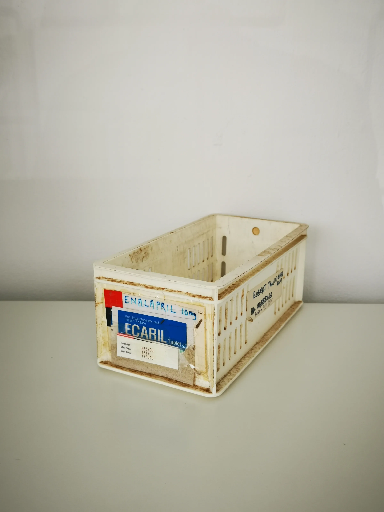

This guide provides essential insights for clinics and distributors looking to source Mounjaro 5mg wholesale, covering key considerations and practical steps.
Sourcing Mounjaro 5mg wholesale is a critical task for clinics and distributors focused on weight management solutions. As demand for effective weight management products continues to rise, understanding how to procure Mounjaro efficiently can significantly impact your business operations and patient satisfaction. The right sourcing strategy can lead to better pricing, improved inventory management, and ultimately, enhanced patient outcomes.
This guide aims to equip professional buyers with the necessary insights and practical steps to navigate the wholesale market for Mounjaro 5mg. By addressing common challenges and providing clear strategies, we hope to streamline your sourcing process and help you make informed decisions that align with your clinic's goals.
Key Takeaways
- Verify supplier credentials to ensure product quality and compliance with regulations.
- Evaluate packaging options to ensure they meet your clinic's storage and handling requirements.
- Check for batch and expiry date visibility to maintain compliance and safety standards.
- Establish strong communication with suppliers regarding shipping, documentation, and order updates.
- Plan your reorder strategy based on patient demand, treatment cycles, and inventory levels.
What this guide covers
- Understanding Mounjaro 5mg
- Identifying relevant buyers
- Comparison criteria for sourcing
- Checklist before requesting quotes
- Logistics and documentation considerations
- MOQ and reorder planning
- Frequently asked questions
What buyers should understand first

Mounjaro 5mg is a medication designed to assist with weight management. It has gained popularity among clinics and distributors due to its effectiveness in helping patients achieve their weight loss goals. For buyers, understanding the product's specifications, such as its formulation and packaging, is essential. This knowledge will help ensure that you are sourcing a product that meets your clinic's standards and patient needs. Additionally, being familiar with the regulatory landscape surrounding Mounjaro can help you navigate compliance issues more effectively.
Which buyers is this most relevant for?
This guide is particularly relevant for clinics, spas, resellers, and distributors who are involved in weight management solutions. Buyers in these sectors need to consider their specific order planning needs, such as the volume of Mounjaro 5mg required, the frequency of patient treatments, and the potential for product variations. Each type of buyer may evaluate their sourcing strategy differently based on their operational model and patient demographics. For instance, a high-volume clinic may prioritize bulk purchasing and consistent supply, while a smaller spa may focus on flexibility and smaller order quantities.
How to compare options before ordering
When sourcing Mounjaro 5mg wholesale, it is crucial to compare options effectively. Here are some practical criteria to consider:
- Product Type: Ensure you are sourcing the correct formulation and dosage that aligns with your treatment protocols.
- Brand: Consider the reputation of the manufacturer and any certifications they may hold, as this can impact product reliability.
- Packaging: Evaluate whether the packaging meets your clinic's requirements for storage and handling, including tamper-proof seals and appropriate labeling.
- Batch/Expiry Visibility: Look for suppliers that provide clear information on batch numbers and expiry dates to ensure product safety.
- Supplier Communication: Assess the responsiveness and clarity of communication from potential suppliers, as this can affect your order experience.
- Destination Requirements: Understand any specific shipping or handling requirements for your location, including temperature control if necessary.
Buyer checklist before requesting a quote

- Confirm the product specifications and requirements, including dosage and formulation.
- Determine your minimum order quantity (MOQ) based on your patient volume.
- Gather necessary documentation for procurement, including any licenses or permits.
- Prepare destination details for shipping, including address and any special handling instructions.
- Establish a timeline for delivery and reorder planning to avoid stockouts.
- Verify supplier credentials and product quality assurance by requesting references or certifications.
Shipping, packing and documentation questions
Logistics play a vital role in sourcing Mounjaro 5mg wholesale. Here are some common questions buyers should consider:
- What are the shipping options available, and how do they impact delivery times and costs?
- How will the product be packed to ensure safety during transit, especially for temperature-sensitive items?
- What documentation is required for customs clearance, and who will handle this process?
- Are there specific handling instructions that need to be followed upon receipt of the product?
- How will you track your order during shipping, and what support is available if issues arise?
MOQ, quotation and reorder planning
When preparing to source Mounjaro 5mg wholesale, it is essential to consider your MOQ and quotation needs. Start by estimating the quantities you will require based on patient demand and treatment cycles. Discuss potential product variants with suppliers to ensure you have the necessary options available. Additionally, provide your destination details to suppliers to facilitate accurate quotations. Remember that SOLA can assist in confirming current availability and providing wholesale quotations tailored to your needs, ensuring you have the right product at the right time.
FAQ
What is the typical MOQ for Mounjaro 5mg?
The MOQ can vary by supplier, so it is essential to inquire directly with potential wholesalers to find a suitable option for your needs.
How can I ensure product quality when sourcing?
Verify supplier credentials and request documentation that confirms product quality standards, such as certificates of analysis.
What shipping options are available for Mounjaro 5mg?
Shipping options will depend on the supplier and your location; always discuss these details upfront to avoid surprises.
Can I request a sample before placing a bulk order?
Many suppliers may offer samples; it is advisable to ask when negotiating your order to assess product quality.
How often should I plan for reorders?
Reorder frequency should align with patient demand and inventory turnover rates, typically assessed on a monthly or quarterly basis.
Contact SOLA for wholesale quotation via WhatsApp.
Planning a wholesale request?
Send product names, quantities and destination for a tailored discussion.
Contact SOLA on WhatsApp →General educational content for professional buyers. Not medical, legal, regulatory or import advice.
Image sources: Medicine storage container 07.jpg by Wikimedia Commons contributor (CC0, 2736x3648 px); Balikatan 25- U S , Philippine forces construct multi-purpose warehouse, prepare medical supplies to local community (8962074).jpg by Lance Cpl. Roger Annoh (Public domain, 7767x4369 px).